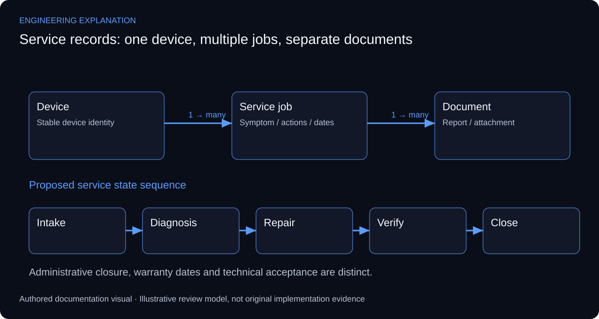

Desktop Software · Service Operations
Service Operations & Technical Documentation Management System
Developed a desktop application for device records, repair tracking, service documentation and operational reporting.
Implemented Project
System architecture
Implementation scope
The source interface shows device records, repair details and warranty/calibration fields. These records connect the equipment identity with the work performed and the documents needed for follow-up.
Connecting a device to its complete service history
The source interface shows device records, repair information and warranty/calibration fields. Its purpose is service operations and technical documentation, which differs from monitoring live device health. The public evidence is an application preview; source code, storage schema and exported service reports have not been recovered.
An explanatory data model separates a device from individual service jobs and their documents. A device may have several interventions, and a repair may have several observations and attachments. This prevents a proposed design from overwriting history whenever a new visit is recorded. The relationships explain the application’s purpose; they do not disclose its original database tables.
A service workflow can progress through intake, diagnosis, repair, verification and closure, with responsibility and supporting records at each stage. A closed ticket and a calibrated device are different statements. Calibration needs its own procedure and result; a warranty date is administrative information and should not become evidence of technical acceptance.
Microsoft’s validation and binding guidance supports form-field handling and display of records. Appropriate review scenarios include invalid dates, missing device identity, duplicate references, attachment handling and retrieval of past work. The example state sequence is proposed for documentation; specific controls, permissions and export formats remain unverified.

Review scenarios and expected evidence
These scenarios specify what evidence would support a review. They do not report additional completed tests.
| Review area | Method | Evidence to inspect |
|---|---|---|
| New service visit | Associate a second job with one device | Prior job remains retrievable |
| Invalid date | End date precedes intake date | Validation explains the conflicting field |
| Attachment reference | Review a missing or replaced document | Record shows its document status |
| Closure | Attempt closure without verification context | Review rule distinguishes repair from acceptance |
Technical references and provenance
Primary references support the engineering explanation, not claims about this project's undocumented configuration or results.
The workflow and relationships are a proposed reconstruction from the interface. They are not a recovered schema or a claim that every validation rule is implemented.
Engineering approach
Search and reporting make service history usable by engineers. This project has its own interface and workflow, distinct from the live monitoring console and RF calculation tools.
Reading the original interface
The screenshot shows device, article and serial identifiers; site and service-call details; receipt and repair dates; project, customer and region; warranty and calibration validity; return reasons; corrective-action summary; repair type and personnel; forwarding fields; status and a customer report. New, modify, save, delete and search controls sit above a record grid.
The poster names VB.NET, WinForms, ADO.NET, Crystal Reports and SQL Server / Access. It does not establish which database engine the published application actually uses.
Proposed data design
Keep device identity separate from each service visit. Model Customer → Project → Site → Device; link each Device to many ServiceCase records. RepairAction, PartReplacement and Document belong to a case. Warranty and Calibration retain historical records rather than overwriting prior validity dates.
Integrity and workflow
Use unique case identifiers, controlled status transitions and date checks so a repair cannot precede receipt. Save a case and its related actions atomically. Use parameterized database operations, a change audit and conflict detection for concurrent edits. Archive records that have issued reports rather than silently removing their history.
The workflow is receipt → fault documentation → diagnosis → repair → verification / calibration → reviewed report → delivery and closure. Failed verification returns to diagnosis. Internal engineering notes and the customer-facing report are separate records.
Interface and verification
A proposed layout uses search and the record list beside tabs for device identity, service visit, repairs / parts, warranty / calibration and documents. Verify multiple visits for one device, calibration renewal without loss of history, concurrent editing and failed attachment storage.
Source context
Original project posters and interface screenshots are identified separately from explanatory source diagrams. The gallery documents this project only. Open any figure to inspect it at full available resolution.